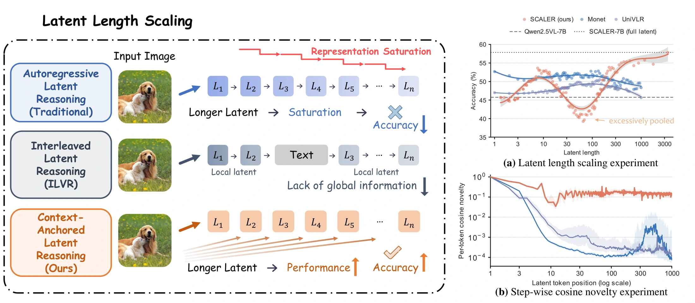
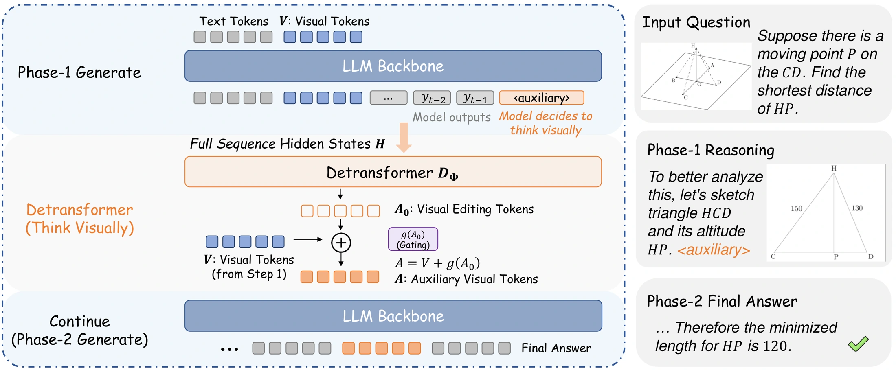
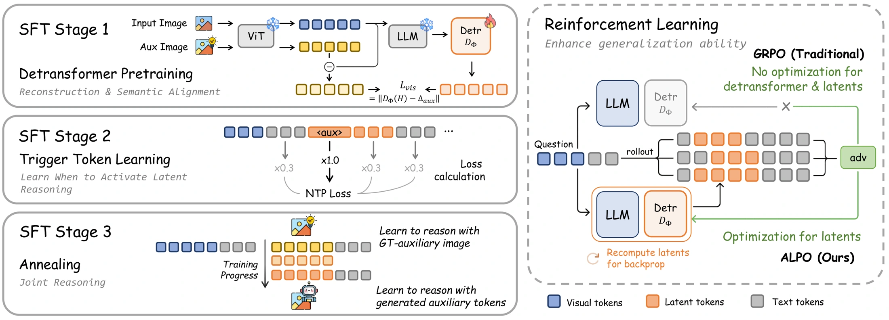
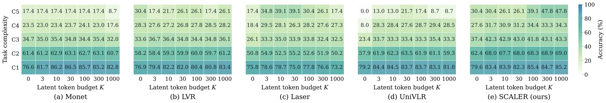
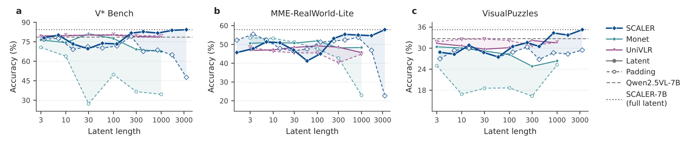
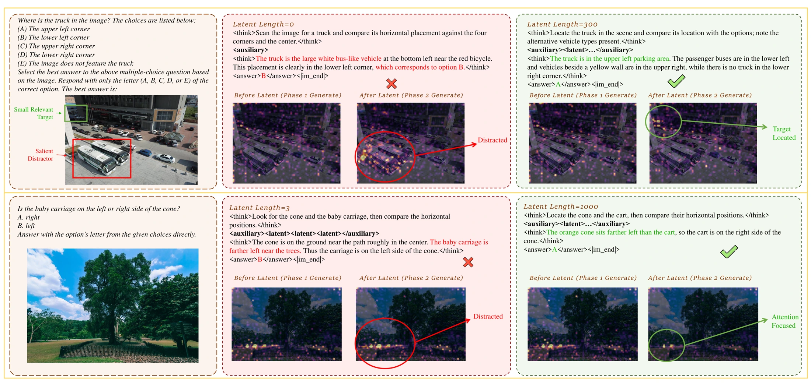
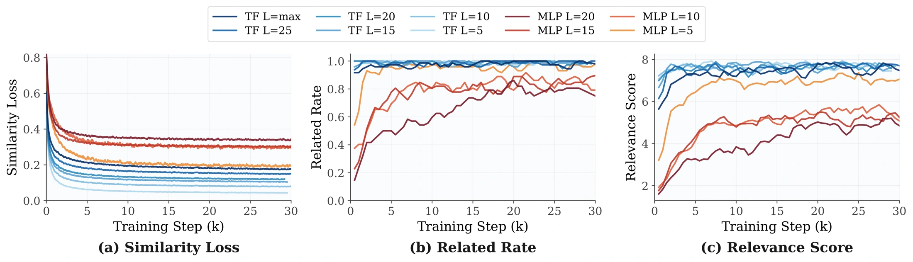
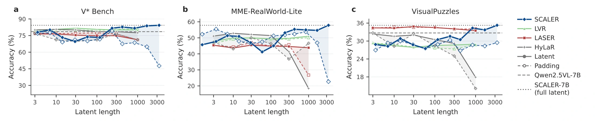

SCALER Breaking the Latent Scaling Bottleneck via Single-Pass Context-Anchored Latent Visual Reasoning
1University of Science and Technology of China2Li Auto Inc.


The idea
Breaking the latent scaling bottleneck
Does visual latent reasoning genuinely scale as both sequence length and task complexity increase? Evaluating existing methods across task complexity and token budget uncovers a fundamental Latent Scaling Bottleneck: existing autoregressive approaches yield modest gains only within short budgets (≤30 tokens) on simple tasks, yet stagnate or degrade on complex tasks and longer sequences due to Latent Representation Saturation and Over-Compressed Supervision Targets (≥128× pooling).
We propose SCALER, which introduces a lightweight detransformer that reads full-sequence hidden states and synthesizes an entire spatially aligned auxiliary visual sequence in a single forward pass. Coupled with a three-stage SFT curriculum and Auxiliary Latent Policy Optimization (ALPO) for differentiable reinforcement learning, SCALER extends effective latent length by over 30×, sustains high representational novelty across 1,000+ tokens, and achieves state-of-the-art open-source accuracy (including 57.84% on MME-RealWorld-Lite, +12.09% over the Qwen2.5-VL-7B backbone and +10.47% over GPT-6-luna) with strong out-of-distribution generalization.
Method
Single-pass, context-anchored reasoning
The model autonomously decides when to think visually, synthesizes a spatially aligned auxiliary block in one forward pass, and continues reasoning in the updated visual context.


<auxiliary>. Full-sequence hidden states are mapped by the detransformer in a single pass to visual editing tokens and residually fused with the original visual features: A = V + g(A₀). The language model then resumes Phase-2 reasoning with A in context.Autonomous triggering
Starting from the input image and question, the model adaptively triggers auxiliary visual synthesis when fine-grained perception or multi-step spatial reasoning is needed.
Single-pass synthesis
A lightweight two-layer detransformer maps full-sequence hidden states to the entire auxiliary visual sequence in one forward pass, eliminating recursive drift.
Spatial grounding
Query-conditioned visual residuals are fused with original image tokens at full spatial resolution to preserve fine-grained layout and local details.
Three-stage SFT curriculum & ALPO reinforcement learning
Delta-feature reconstruction, weighted trigger learning, and teacher-forcing annealing align the visual branch. ALPO then propagates outcome-level rewards through differentiable latent recomputation.


Experiments
State-of-the-art performance across five benchmarks
High-resolution perception, real-world reasoning, and out-of-distribution visual logic (VisualPuzzles). Overall accuracy (%) is shown below.
| Model | V*Bench | HRBench 4K | HRBench 8K | MME-RW Lite | Visual Puzzles |
|---|---|---|---|---|---|
| GPT-4o Proprietary | 67.50 | 65.00 | 59.60 | 45.25 | 41.30 |
| GPT-6-luna Proprietary | 76.44 | 72.75 | 66.25 | 47.37 | 42.38 |
| Qwen2.5-VL-7B Backbone | 78.53 | 71.50 | 63.75 | 45.75 | 32.71 |
| LVR | 81.15 | 69.50 | 62.25 | 49.66 | 28.51 |
| Monet | 83.77 | 73.13 | 67.13 | 52.63 | 28.34 |
| HyLaR | 80.10 | 73.25 | 69.38 | 52.74 | 30.05 |
| LASER | 76.96 | 73.25 | 66.13 | 50.96 | 35.10 |
| UniVLR | 82.70 | 73.30 | 68.80 | 50.70 | 32.53 |
| SCALER-SFT Ours | 82.72 | 74.25 | 66.75 | 52.84 | 34.16 |
| SCALER-7B Ours | 84.29 | 75.25 | 68.88 | 57.84 | 35.27 |
| Gain over backbone percentage points | +5.76 | +3.75 | +5.13 | +12.09 | +2.56 |
SCALER-7B achieves the highest open-source accuracy on four of the five benchmarks (improving MME-RealWorld-Lite by +12.09% over the Qwen2.5-VL-7B backbone and surpassing GPT-6-luna by +10.47%), while leading HRBench-8K Fine-grained Cross-instance Perception (FCP) at 61.25% (+10.0% over HyLaR).
Breaking the bottleneck across latent length and task complexity
Evaluating 4,878 test questions across five complexity tiers (C1–C5) and latent budgets K ∈ {0, 3, 10, 30, 100, 300, 1000} reveals that SCALER sustains positive scaling on complex multi-hop tasks (C4–C5).

Genuine visual semantics vs. meaningless padding
Replacing generated latents with equal-length padding probes their causal semantic contribution across latent budgets.

Visualization
What changes when the model sees more?
Qualitative case studies and cross-modal attention visualizations across latent token budgets. Select any figure to inspect at full resolution.
From coarse cues to fine-grained evidence
Scaling the latent token budget preserves fine-grained spatial details needed for complete fine-print price comparison and overlapping instance separation.

Shifting attention from salient distractors to fine-grained targets
High-resolution auxiliary visual latents shift Phase-2 cross-modal attention from foreground distractors and diffuse scanning onto small, task-relevant targets.


Additional analysesDetransformer architecture study and extended padding controls
Detransformer architecture and hidden-layer selection
Two-layer bottleneck Transformer vs. MLP across candidate extraction layers ℓ ∈ {5, 10, 15, 20, 25, max}, evaluated via similarity loss, related rate, and relevance score.


Extended meaningless padding comparisons
Length scaling and meaningless padding interventions for LVR, LASER, and HyLaR alongside SCALER across V*Bench, MME-RealWorld-Lite, and VisualPuzzles.


Code & Models
Run SCALER inference and evaluation
Standalone inference and five-benchmark evaluation in lmms-eval are available in our GitHub repository. Training code & Model Checkpoints will be released soon.
python inference/run.py \
--model /path/to/checkpoint \
--case inference/examples/dog.json \
--output outputs/dog.jsonCitation
If you find SCALER useful for your research, please consider citing our work:
@article{wang2026scaler,
title = {SCALER: Breaking the Latent Scaling Bottleneck
via Single-Pass Context-Anchored Latent
Visual Reasoning},
author = {Chenfeng Wang and Wei Zhai and Wei He and
Xuhan Zhu and Chunpeng Zhou and Song Yan and
Qizhen Li and Zeyu Zhang and Shuai Guo and
Yufei Zheng and Chengjun Yu and Fan Lu and
Yang Cao and Pengfei Yu and Zheng-Jun Zha},
journal = {arXiv preprint},
year = {2026},
url = {https://bonjour-codedev.github.io/SCALER/}
}